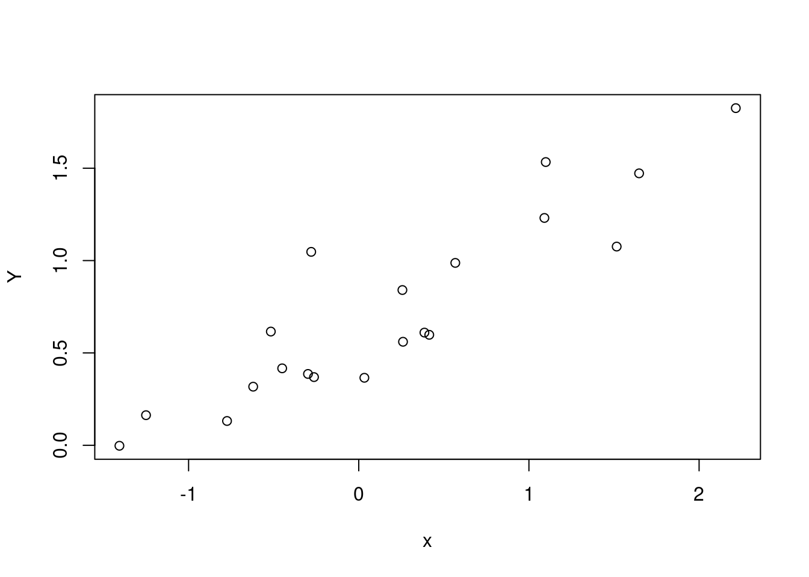

library(targets)
library(ggplot2)
library(tidyverse)
library(tidybayes)I’ve always wanted to understand how to do phylogenetic regressions, and thanks to my colleauge Alex Fuster I finally had the opportunity to sit down and work on them. The literature on the topic is confusing, large, and not always clear about what model is being fit. I relied heavily on two resources:
- one book, a free online resource from Tony Ives (Ives, n.d.)
- a preprint, an excellent review of the use and misuse of Pagel’s Lambda by Pearse, Davies, and Wolkovich (n.d.)
Why a phylogenetic regression?
Suppose you have two traits, measured across many different species – say, social group size (Trait X) and brain size (Trait Y). You want to test the hypothesis that bigger social groups mean a bigger brain. However there’s a catch: some of the species are closely related, and others are not. Its entirely possible that any apparent correlation between Trait X and Trait Y comes from random chance: both traits change randomly along evolutionary time. That means that distantly related species have more time to become different to each other, and close relatives have less “time apart” and are therefore less likely to be different in their two traits.
Because every kind of cross-species comparison involves a group of species with a phylogenetic structure, “controlling for phylogeny” has become very common in these kinds of studies. Also, because we are usually missing traits for at least some species in our studies, people often use phylogeny as a guide for guessing what trait values are present in the animals that we haven’t measured.
Recipe for phylogeny
I love the large and flexible toolbox of Bayesian methods because it can be adapted to fit such a huge array of models – virtually all the models that ecologists want to fit! However, there’s a catch: to fit a model using Stan (or something similar) you have to know exactly what model you’re fitting. However, because these regressions are usually fit using custom software, it can be a challenge to dig to find the exact equations being fit!
Using the two resources mentioned above, I was able to write down (I hope!) the equation for the model like this:
$$ \[\begin{align} y_i &\sim \text{Normal}(\bar{y} + \beta_1 x_i + a_{s[i]}, \sigma_y) \\ a_{s} &\sim \text{MVNormal}(0, \Sigma_a)\\ \Sigma_a &= \begin{bmatrix} \sigma_a^2 & \lambda_a \cdot \sigma_{12} & \cdots & \lambda_a \cdot \sigma_{1,s} \\ \lambda_a \cdot \sigma_{21} & \sigma_a^2 & \cdots & \lambda_a \cdot \sigma_{2,s} \\ \vdots & \vdots & \ddots & \vdots \\ \lambda_a \cdot \sigma_{s,1} & \lambda_a \cdot \sigma_{s,2} & \cdots & \sigma_a^2 \end{bmatrix} \\ x_i &\sim \text{Normal}(\bar{x} + b_{s[i]}, \sigma_x) \\ b_{s} &\sim \text{MVNormal}(0, \Sigma_b)\\ \Sigma_b &= \begin{bmatrix} \sigma_b^2 & \lambda_b \cdot \sigma_{12} & \cdots & \lambda_b \cdot \sigma_{1,s} \\ \lambda_b \cdot \sigma_{21} & \sigma_b^2 & \cdots & \lambda_b \cdot \sigma_{2,s} \\ \vdots & \vdots & \ddots & \vdots \\ \lambda_b \cdot \sigma_{s,1} & \lambda_b \cdot \sigma_{s,2} & \cdots & \sigma_b^2 \end{bmatrix} \end{align}\] $$ {#eq-phyloreg}
You can see that there are two big variance-covariance matrices here, for the effects of phylogeny on \(y\) and \(x\). These covariance matrices have three ingredients that are all put together:
- the base How far apart are species on the phylogeny? Many ecologists work with trees where all the tips end at the present day – so all species have the same amount of time going back to their last common ancestor. For trees like this, the diagonal is 1 (i.e., 100% of the evolutionary time). The off-diagonals are the proportion of this total time which is shared between species.
- the flavour This is a model of species averages. If there were no effect of phylogeny at all, we would still expect species to be a little different. But how different are species from each other? That is controlled by a standard deviation, \(\sigma\), which we multiply the whole matrix by to scale it.
- the secret sauce The off-diagnal elements of \(\Sigma\) are multiplied by another number between 0 and 1: this is “Pagel’s Lambda”. It acts like a tuning knob, adjusting the amount of phylogenetic flavour that makes it into the model. When \(\lambda\) is 1, we have the maximum amount of covariance coming from the phylogeny. When \(\lambda\) is 0, we are back to an identity matrix and the species are independent.
There’s another way to write this equation that makes these three parts more clear to see. First we have to make \(V_{phy}\), which is the phylogenetic variance-covariance matrix. This has variances and covariances for each species on our tree. For example, for 3 species the phylogenetic variance covariance matrix is:
\[ V_{phy} = \begin{bmatrix} \sigma_1^2 & \sigma_{12} & \sigma_{1,3} \\ \sigma_{2,1} & \sigma_2^2 & \sigma_{2,3} \\ \sigma_{3,1} & \sigma_{3,2} & \sigma_3^2 \end{bmatrix} \] The covariances are equal to the proportion of the tree that is shared between two species. The diagonal is the amount of time between the tree’s start and each species. This is just a fancy way to say that, for a tree where all the tips end at the present day, the diagonal is 1 and the off-diagonal is between 0 and 1.
Then, we can write the expression for \(\Sigma\) like this:
\[ \Sigma = \sigma^2 \lambda V_{phy} + \sigma^2 (1 - \lambda) \mathbf{I} \] This is equation 4 in Pearse, Davies, and Wolkovich (n.d.).
I can rewrite ?@eq-phyloreg in this style:
$$ \[\begin{align} y_i &\sim \text{Normal}(\bar{y} + \beta_1 x_i + a_{s[i]}, \sigma_y) \\ a_{s} &\sim \text{MVNormal}(0, \Sigma_a)\\ \Sigma_a &= \sigma_a^2 \lambda_a V_{phy} + \sigma_a^2 (1 - \lambda_a) \mathbf{I} \\ x_i &\sim \text{Normal}(\bar{x} + b_{s[i]}, \sigma_x) \\ b_{s} &\sim \text{MVNormal}(0, \Sigma_b)\\ \Sigma_b &= \sigma_b^2 \lambda_b V_{phy} + \sigma_b^2 (1 - \lambda_b) \mathbf{I} \\ \end{align}\]
$$ You can see I’m using two different trait variances and two different \(\lambda\)s, because the two traits might have a different amount of variance among species, and within that might have a different amount of phylogenetic signal.
Data simulation
Here is simulation code from Ives (n.d.) , which generates a dataset where there is a signal for phylogeny and also a relationship between two traits of interest. I’ll use this code to generate a dataset and then estimate the known parameters with a Stan model:
## simulate data
set.seed(1618)
n <- 20
b0 <- 0
b1 <- -.1
lam.x <- .98
lam.e <- .8
sigma_y <- .6
sigma_x <- 1
phy <- ape::compute.brlen(
ape::rtree(n=n),
method = "Grafen",
power = 1)
plot(phy)
phy.x <- phylolm::transf.branch.lengths(
phy=phy, model="lambda",
parameters=list(lambda = lam.x))$tree
phy.e <- phylolm::transf.branch.lengths(
phy=phy, model="lambda",
parameters=list(lambda = lam.e))$tree
x <- ape::rTraitCont(phy.x, model = "BM", sigma = sigma_x)
e <- ape::rTraitCont(phy.e, model = "BM", sigma = sigma_y)
x <- x[match(names(e), names(x))]
Y <- b0 + b1 * x + e
Y <- array(Y)
rownames(Y) <- phy$tip.label
plot(x, Y)
phylo <- cmdstanr::cmdstan_model(here::here("posts/2024-09-27-phylo/phylo.stan"))
phylodata {
int n;
int s;
vector[n] x;
vector[n] y;
matrix[s, s] phyvcv;
}
parameters {
real b0;
real b1;
real sigma_x;
real sigma_y;
real logit_lambda_x;
real logit_lambda_y;
}
transformed parameters {
real<lower=0,upper=1> lambda_x;
lambda_x = inv_logit(logit_lambda_x);
// y
real<lower=0,upper=1> lambda_y;
lambda_y = inv_logit(logit_lambda_y);
}
model {
b0 ~ std_normal();
b1 ~ normal(.5, .5);
sigma_x ~ exponential(1);
sigma_y ~ exponential(1);
logit_lambda_x ~ normal(3, .2);
logit_lambda_y ~ normal(0, .2);
matrix[s, s] vcv_x;
vcv_x = add_diag(sigma_x^2*lambda_x*phyvcv, sigma_x^2*(1 - lambda_x));
matrix[s, s] vcv_y;
vcv_y = add_diag(sigma_y^2*lambda_y*phyvcv, sigma_y^2*(1 - lambda_y));
x ~ multi_normal(rep_vector(0, n), vcv_x);
y ~ multi_normal(b0 + b1*x, vcv_y);
}phylo_sample <- phylo$sample(data = list(
n = n,
s = n,
x = x,
y = Y,
phyvcv = ape::vcv(phy)
),parallel_chains = 4, refresh = 1000)Running MCMC with 4 parallel chains...Chain 1 Iteration: 1 / 2000 [ 0%] (Warmup) Chain 2 Iteration: 1 / 2000 [ 0%] (Warmup)
Chain 2 Iteration: 1000 / 2000 [ 50%] (Warmup)
Chain 2 Iteration: 1001 / 2000 [ 50%] (Sampling) Chain 3 Iteration: 1 / 2000 [ 0%] (Warmup)
Chain 3 Iteration: 1000 / 2000 [ 50%] (Warmup)
Chain 3 Iteration: 1001 / 2000 [ 50%] (Sampling) Chain 4 Iteration: 1 / 2000 [ 0%] (Warmup)
Chain 4 Iteration: 1000 / 2000 [ 50%] (Warmup)
Chain 4 Iteration: 1001 / 2000 [ 50%] (Sampling) Chain 1 Iteration: 1000 / 2000 [ 50%] (Warmup)
Chain 1 Iteration: 1001 / 2000 [ 50%] (Sampling)
Chain 1 Iteration: 2000 / 2000 [100%] (Sampling)
Chain 2 Iteration: 2000 / 2000 [100%] (Sampling)
Chain 4 Iteration: 2000 / 2000 [100%] (Sampling)
Chain 1 finished in 0.3 seconds.
Chain 2 finished in 0.3 seconds.
Chain 4 finished in 0.3 seconds.
Chain 3 Iteration: 2000 / 2000 [100%] (Sampling)
Chain 3 finished in 0.3 seconds.
All 4 chains finished successfully.
Mean chain execution time: 0.3 seconds.
Total execution time: 0.5 seconds.phylo_sample variable mean median sd mad q5 q95 rhat ess_bulk ess_tail
lp__ 7.03 7.35 1.88 1.71 3.44 9.42 1.00 1691 2050
b0 0.25 0.25 0.21 0.20 -0.09 0.59 1.00 3999 2561
b1 -0.07 -0.07 0.15 0.15 -0.30 0.18 1.00 4884 2904
sigma_x 0.99 0.97 0.16 0.16 0.75 1.27 1.00 4878 2405
sigma_y 0.47 0.46 0.09 0.08 0.35 0.63 1.00 3711 2546
logit_lambda_x 2.99 2.99 0.20 0.20 2.66 3.31 1.00 5765 3000
logit_lambda_y 0.03 0.03 0.20 0.20 -0.31 0.36 1.00 4084 3063
lambda_x 0.95 0.95 0.01 0.01 0.93 0.96 1.00 5765 3000
lambda_y 0.51 0.51 0.05 0.05 0.42 0.59 1.00 4084 3063Tips from the forum
phylo_forum <- cmdstanr::cmdstan_model(here::here("posts/2024-09-27-phylo/phylo_forum.stan"))
phylo_forumdata {
int<lower=0> n;
int<lower=0> s;
vector[n] x;
vector[n] y;
matrix[s, s] phyvcv;
}
transformed data {
vector[n] zero_vec = rep_vector(0, n);
}
parameters {
real b0;
real<offset=0.5, multiplier=0.5> b1;
real sigma_x;
real sigma_y;
real<offset=3, multiplier=0.2> logit_lambda_x;
real<multiplier=0.2> logit_lambda_y;
}
transformed parameters {
real<lower=0, upper=1> lambda_x = inv_logit(logit_lambda_x);
real<lower=0, upper=1> lambda_y = inv_logit(logit_lambda_y);
}
model {
matrix[s, s] vcv_x
= sigma_x^2 * add_diag(lambda_x * phyvcv, 1 - lambda_x);
matrix[s, s] vcv_y
= sigma_y^2 * add_diag(lambda_y * phyvcv, 1 - lambda_y);
b0 ~ std_normal();
b1 ~ std_normal();
sigma_x ~ exponential(1);
sigma_y ~ exponential(1);
logit_lambda_x ~ std_normal();
logit_lambda_y ~ std_normal();
x ~ multi_normal(zero_vec, vcv_x);
y ~ multi_normal(b0 + b1 * x, vcv_y);
}phylo_forum_sample <- phylo_forum$sample(data = list(
n = n,
s = n,
x = x,
y = Y,
phyvcv = ape::vcv(phy)
),parallel_chains = 4, refresh = 1000)Running MCMC with 4 parallel chains...
Chain 1 Iteration: 1 / 2000 [ 0%] (Warmup) Chain 1 Informational Message: The current Metropolis proposal is about to be rejected because of the following issue:Chain 1 Exception: exponential_lpdf: Random variable is -0.51895, but must be nonnegative! (in '/tmp/Rtmpkr95XI/model-431f5eaab01d.stan', line 31, column 2 to column 27)Chain 1 If this warning occurs sporadically, such as for highly constrained variable types like covariance matrices, then the sampler is fine,Chain 1 but if this warning occurs often then your model may be either severely ill-conditioned or misspecified.Chain 1 Chain 1 Informational Message: The current Metropolis proposal is about to be rejected because of the following issue:Chain 1 Exception: exponential_lpdf: Random variable is -0.700908, but must be nonnegative! (in '/tmp/Rtmpkr95XI/model-431f5eaab01d.stan', line 31, column 2 to column 27)Chain 1 If this warning occurs sporadically, such as for highly constrained variable types like covariance matrices, then the sampler is fine,Chain 1 but if this warning occurs often then your model may be either severely ill-conditioned or misspecified.Chain 1 Chain 1 Informational Message: The current Metropolis proposal is about to be rejected because of the following issue:Chain 1 Exception: exponential_lpdf: Random variable is -0.770928, but must be nonnegative! (in '/tmp/Rtmpkr95XI/model-431f5eaab01d.stan', line 32, column 2 to column 27)Chain 1 If this warning occurs sporadically, such as for highly constrained variable types like covariance matrices, then the sampler is fine,Chain 1 but if this warning occurs often then your model may be either severely ill-conditioned or misspecified.Chain 1 Chain 2 Rejecting initial value:Chain 2 Error evaluating the log probability at the initial value.Chain 2 Exception: exponential_lpdf: Random variable is -0.164996, but must be nonnegative! (in '/tmp/Rtmpkr95XI/model-431f5eaab01d.stan', line 31, column 2 to column 27)
Chain 2 Exception: exponential_lpdf: Random variable is -0.164996, but must be nonnegative! (in '/tmp/Rtmpkr95XI/model-431f5eaab01d.stan', line 31, column 2 to column 27)Chain 2 Iteration: 1 / 2000 [ 0%] (Warmup) Chain 2 Informational Message: The current Metropolis proposal is about to be rejected because of the following issue:Chain 2 Exception: exponential_lpdf: Random variable is -239.939, but must be nonnegative! (in '/tmp/Rtmpkr95XI/model-431f5eaab01d.stan', line 31, column 2 to column 27)Chain 2 If this warning occurs sporadically, such as for highly constrained variable types like covariance matrices, then the sampler is fine,Chain 2 but if this warning occurs often then your model may be either severely ill-conditioned or misspecified.Chain 2 Chain 2 Informational Message: The current Metropolis proposal is about to be rejected because of the following issue:Chain 2 Exception: exponential_lpdf: Random variable is -30.0871, but must be nonnegative! (in '/tmp/Rtmpkr95XI/model-431f5eaab01d.stan', line 32, column 2 to column 27)Chain 2 If this warning occurs sporadically, such as for highly constrained variable types like covariance matrices, then the sampler is fine,Chain 2 but if this warning occurs often then your model may be either severely ill-conditioned or misspecified.Chain 2 Chain 2 Informational Message: The current Metropolis proposal is about to be rejected because of the following issue:Chain 2 Exception: exponential_lpdf: Random variable is -0.0239313, but must be nonnegative! (in '/tmp/Rtmpkr95XI/model-431f5eaab01d.stan', line 32, column 2 to column 27)Chain 2 If this warning occurs sporadically, such as for highly constrained variable types like covariance matrices, then the sampler is fine,Chain 2 but if this warning occurs often then your model may be either severely ill-conditioned or misspecified.Chain 2 Chain 3 Rejecting initial value:Chain 3 Error evaluating the log probability at the initial value.Chain 3 Exception: exponential_lpdf: Random variable is -0.582241, but must be nonnegative! (in '/tmp/Rtmpkr95XI/model-431f5eaab01d.stan', line 31, column 2 to column 27)
Chain 3 Exception: exponential_lpdf: Random variable is -0.582241, but must be nonnegative! (in '/tmp/Rtmpkr95XI/model-431f5eaab01d.stan', line 31, column 2 to column 27)Chain 3 Iteration: 1 / 2000 [ 0%] (Warmup) Chain 3 Informational Message: The current Metropolis proposal is about to be rejected because of the following issue:Chain 3 Exception: exponential_lpdf: Random variable is -6.77531, but must be nonnegative! (in '/tmp/Rtmpkr95XI/model-431f5eaab01d.stan', line 32, column 2 to column 27)Chain 3 If this warning occurs sporadically, such as for highly constrained variable types like covariance matrices, then the sampler is fine,Chain 3 but if this warning occurs often then your model may be either severely ill-conditioned or misspecified.Chain 3 Chain 3 Informational Message: The current Metropolis proposal is about to be rejected because of the following issue:Chain 3 Exception: exponential_lpdf: Random variable is -7.75933, but must be nonnegative! (in '/tmp/Rtmpkr95XI/model-431f5eaab01d.stan', line 32, column 2 to column 27)Chain 3 If this warning occurs sporadically, such as for highly constrained variable types like covariance matrices, then the sampler is fine,Chain 3 but if this warning occurs often then your model may be either severely ill-conditioned or misspecified.Chain 3 Chain 3 Informational Message: The current Metropolis proposal is about to be rejected because of the following issue:Chain 3 Exception: exponential_lpdf: Random variable is -0.949866, but must be nonnegative! (in '/tmp/Rtmpkr95XI/model-431f5eaab01d.stan', line 32, column 2 to column 27)Chain 3 If this warning occurs sporadically, such as for highly constrained variable types like covariance matrices, then the sampler is fine,Chain 3 but if this warning occurs often then your model may be either severely ill-conditioned or misspecified.Chain 3 Chain 3 Informational Message: The current Metropolis proposal is about to be rejected because of the following issue:Chain 3 Exception: exponential_lpdf: Random variable is -1.94406, but must be nonnegative! (in '/tmp/Rtmpkr95XI/model-431f5eaab01d.stan', line 31, column 2 to column 27)Chain 3 If this warning occurs sporadically, such as for highly constrained variable types like covariance matrices, then the sampler is fine,Chain 3 but if this warning occurs often then your model may be either severely ill-conditioned or misspecified.Chain 3 Chain 3 Informational Message: The current Metropolis proposal is about to be rejected because of the following issue:Chain 3 Exception: exponential_lpdf: Random variable is -1.11172, but must be nonnegative! (in '/tmp/Rtmpkr95XI/model-431f5eaab01d.stan', line 32, column 2 to column 27)Chain 3 If this warning occurs sporadically, such as for highly constrained variable types like covariance matrices, then the sampler is fine,Chain 3 but if this warning occurs often then your model may be either severely ill-conditioned or misspecified.Chain 3 Chain 4 Rejecting initial value:Chain 4 Error evaluating the log probability at the initial value.Chain 4 Exception: exponential_lpdf: Random variable is -1.23407, but must be nonnegative! (in '/tmp/Rtmpkr95XI/model-431f5eaab01d.stan', line 32, column 2 to column 27)
Chain 4 Exception: exponential_lpdf: Random variable is -1.23407, but must be nonnegative! (in '/tmp/Rtmpkr95XI/model-431f5eaab01d.stan', line 32, column 2 to column 27)Chain 4 Rejecting initial value:Chain 4 Error evaluating the log probability at the initial value.Chain 4 Exception: exponential_lpdf: Random variable is -0.812231, but must be nonnegative! (in '/tmp/Rtmpkr95XI/model-431f5eaab01d.stan', line 31, column 2 to column 27)
Chain 4 Exception: exponential_lpdf: Random variable is -0.812231, but must be nonnegative! (in '/tmp/Rtmpkr95XI/model-431f5eaab01d.stan', line 31, column 2 to column 27)Chain 4 Rejecting initial value:Chain 4 Error evaluating the log probability at the initial value.Chain 4 Exception: exponential_lpdf: Random variable is -1.2108, but must be nonnegative! (in '/tmp/Rtmpkr95XI/model-431f5eaab01d.stan', line 32, column 2 to column 27)
Chain 4 Exception: exponential_lpdf: Random variable is -1.2108, but must be nonnegative! (in '/tmp/Rtmpkr95XI/model-431f5eaab01d.stan', line 32, column 2 to column 27)Chain 4 Iteration: 1 / 2000 [ 0%] (Warmup) Chain 4 Informational Message: The current Metropolis proposal is about to be rejected because of the following issue:Chain 4 Exception: exponential_lpdf: Random variable is -2.11394, but must be nonnegative! (in '/tmp/Rtmpkr95XI/model-431f5eaab01d.stan', line 32, column 2 to column 27)Chain 4 If this warning occurs sporadically, such as for highly constrained variable types like covariance matrices, then the sampler is fine,Chain 4 but if this warning occurs often then your model may be either severely ill-conditioned or misspecified.Chain 4 Chain 4 Informational Message: The current Metropolis proposal is about to be rejected because of the following issue:Chain 4 Exception: exponential_lpdf: Random variable is -2.99518, but must be nonnegative! (in '/tmp/Rtmpkr95XI/model-431f5eaab01d.stan', line 32, column 2 to column 27)Chain 4 If this warning occurs sporadically, such as for highly constrained variable types like covariance matrices, then the sampler is fine,Chain 4 but if this warning occurs often then your model may be either severely ill-conditioned or misspecified.Chain 4 Chain 4 Informational Message: The current Metropolis proposal is about to be rejected because of the following issue:Chain 4 Exception: exponential_lpdf: Random variable is -381.664, but must be nonnegative! (in '/tmp/Rtmpkr95XI/model-431f5eaab01d.stan', line 31, column 2 to column 27)Chain 4 If this warning occurs sporadically, such as for highly constrained variable types like covariance matrices, then the sampler is fine,Chain 4 but if this warning occurs often then your model may be either severely ill-conditioned or misspecified.Chain 4 Chain 4 Informational Message: The current Metropolis proposal is about to be rejected because of the following issue:Chain 4 Exception: exponential_lpdf: Random variable is -9.75761, but must be nonnegative! (in '/tmp/Rtmpkr95XI/model-431f5eaab01d.stan', line 31, column 2 to column 27)Chain 4 If this warning occurs sporadically, such as for highly constrained variable types like covariance matrices, then the sampler is fine,Chain 4 but if this warning occurs often then your model may be either severely ill-conditioned or misspecified.Chain 4 Chain 1 Informational Message: The current Metropolis proposal is about to be rejected because of the following issue:Chain 1 Exception: exponential_lpdf: Random variable is -0.234259, but must be nonnegative! (in '/tmp/Rtmpkr95XI/model-431f5eaab01d.stan', line 31, column 2 to column 27)Chain 1 If this warning occurs sporadically, such as for highly constrained variable types like covariance matrices, then the sampler is fine,Chain 1 but if this warning occurs often then your model may be either severely ill-conditioned or misspecified.Chain 1 Chain 1 Informational Message: The current Metropolis proposal is about to be rejected because of the following issue:Chain 1 Exception: exponential_lpdf: Random variable is -0.0104136, but must be nonnegative! (in '/tmp/Rtmpkr95XI/model-431f5eaab01d.stan', line 32, column 2 to column 27)Chain 1 If this warning occurs sporadically, such as for highly constrained variable types like covariance matrices, then the sampler is fine,Chain 1 but if this warning occurs often then your model may be either severely ill-conditioned or misspecified.Chain 1 Chain 2 Informational Message: The current Metropolis proposal is about to be rejected because of the following issue:Chain 2 Exception: exponential_lpdf: Random variable is -4.03245, but must be nonnegative! (in '/tmp/Rtmpkr95XI/model-431f5eaab01d.stan', line 32, column 2 to column 27)Chain 2 If this warning occurs sporadically, such as for highly constrained variable types like covariance matrices, then the sampler is fine,Chain 2 but if this warning occurs often then your model may be either severely ill-conditioned or misspecified.Chain 2 Chain 3 Informational Message: The current Metropolis proposal is about to be rejected because of the following issue:Chain 3 Exception: exponential_lpdf: Random variable is -1.28496, but must be nonnegative! (in '/tmp/Rtmpkr95XI/model-431f5eaab01d.stan', line 32, column 2 to column 27)Chain 3 If this warning occurs sporadically, such as for highly constrained variable types like covariance matrices, then the sampler is fine,Chain 3 but if this warning occurs often then your model may be either severely ill-conditioned or misspecified.Chain 3 Chain 3 Informational Message: The current Metropolis proposal is about to be rejected because of the following issue:Chain 3 Exception: exponential_lpdf: Random variable is -0.548797, but must be nonnegative! (in '/tmp/Rtmpkr95XI/model-431f5eaab01d.stan', line 32, column 2 to column 27)Chain 3 If this warning occurs sporadically, such as for highly constrained variable types like covariance matrices, then the sampler is fine,Chain 3 but if this warning occurs often then your model may be either severely ill-conditioned or misspecified.Chain 3 Chain 3 Informational Message: The current Metropolis proposal is about to be rejected because of the following issue:Chain 3 Exception: exponential_lpdf: Random variable is -0.694561, but must be nonnegative! (in '/tmp/Rtmpkr95XI/model-431f5eaab01d.stan', line 31, column 2 to column 27)Chain 3 If this warning occurs sporadically, such as for highly constrained variable types like covariance matrices, then the sampler is fine,Chain 3 but if this warning occurs often then your model may be either severely ill-conditioned or misspecified.Chain 3 Chain 4 Informational Message: The current Metropolis proposal is about to be rejected because of the following issue:Chain 4 Exception: exponential_lpdf: Random variable is -0.757703, but must be nonnegative! (in '/tmp/Rtmpkr95XI/model-431f5eaab01d.stan', line 32, column 2 to column 27)Chain 4 If this warning occurs sporadically, such as for highly constrained variable types like covariance matrices, then the sampler is fine,Chain 4 but if this warning occurs often then your model may be either severely ill-conditioned or misspecified.Chain 4 Chain 1 Informational Message: The current Metropolis proposal is about to be rejected because of the following issue:Chain 1 Exception: exponential_lpdf: Random variable is -4.31528, but must be nonnegative! (in '/tmp/Rtmpkr95XI/model-431f5eaab01d.stan', line 32, column 2 to column 27)Chain 1 If this warning occurs sporadically, such as for highly constrained variable types like covariance matrices, then the sampler is fine,Chain 1 but if this warning occurs often then your model may be either severely ill-conditioned or misspecified.Chain 1 Chain 1 Informational Message: The current Metropolis proposal is about to be rejected because of the following issue:Chain 1 Exception: exponential_lpdf: Random variable is -4.30625, but must be nonnegative! (in '/tmp/Rtmpkr95XI/model-431f5eaab01d.stan', line 32, column 2 to column 27)Chain 1 If this warning occurs sporadically, such as for highly constrained variable types like covariance matrices, then the sampler is fine,Chain 1 but if this warning occurs often then your model may be either severely ill-conditioned or misspecified.Chain 1 Chain 2 Informational Message: The current Metropolis proposal is about to be rejected because of the following issue:Chain 2 Exception: exponential_lpdf: Random variable is -0.550271, but must be nonnegative! (in '/tmp/Rtmpkr95XI/model-431f5eaab01d.stan', line 32, column 2 to column 27)Chain 2 If this warning occurs sporadically, such as for highly constrained variable types like covariance matrices, then the sampler is fine,Chain 2 but if this warning occurs often then your model may be either severely ill-conditioned or misspecified.Chain 2 Chain 2 Informational Message: The current Metropolis proposal is about to be rejected because of the following issue:Chain 2 Exception: exponential_lpdf: Random variable is -0.209166, but must be nonnegative! (in '/tmp/Rtmpkr95XI/model-431f5eaab01d.stan', line 32, column 2 to column 27)Chain 2 If this warning occurs sporadically, such as for highly constrained variable types like covariance matrices, then the sampler is fine,Chain 2 but if this warning occurs often then your model may be either severely ill-conditioned or misspecified.Chain 2 Chain 4 Informational Message: The current Metropolis proposal is about to be rejected because of the following issue:Chain 4 Exception: exponential_lpdf: Random variable is -1.53058, but must be nonnegative! (in '/tmp/Rtmpkr95XI/model-431f5eaab01d.stan', line 32, column 2 to column 27)Chain 4 If this warning occurs sporadically, such as for highly constrained variable types like covariance matrices, then the sampler is fine,Chain 4 but if this warning occurs often then your model may be either severely ill-conditioned or misspecified.Chain 4 Chain 1 Iteration: 1000 / 2000 [ 50%] (Warmup)
Chain 1 Iteration: 1001 / 2000 [ 50%] (Sampling) Chain 1 Informational Message: The current Metropolis proposal is about to be rejected because of the following issue:Chain 1 Exception: exponential_lpdf: Random variable is -1.18267, but must be nonnegative! (in '/tmp/Rtmpkr95XI/model-431f5eaab01d.stan', line 31, column 2 to column 27)Chain 1 If this warning occurs sporadically, such as for highly constrained variable types like covariance matrices, then the sampler is fine,Chain 1 but if this warning occurs often then your model may be either severely ill-conditioned or misspecified.Chain 1 Chain 2 Iteration: 1000 / 2000 [ 50%] (Warmup)
Chain 2 Iteration: 1001 / 2000 [ 50%] (Sampling) Chain 2 Informational Message: The current Metropolis proposal is about to be rejected because of the following issue:Chain 2 Exception: exponential_lpdf: Random variable is -0.420203, but must be nonnegative! (in '/tmp/Rtmpkr95XI/model-431f5eaab01d.stan', line 32, column 2 to column 27)Chain 2 If this warning occurs sporadically, such as for highly constrained variable types like covariance matrices, then the sampler is fine,Chain 2 but if this warning occurs often then your model may be either severely ill-conditioned or misspecified.Chain 2 Chain 3 Iteration: 1000 / 2000 [ 50%] (Warmup)
Chain 3 Iteration: 1001 / 2000 [ 50%] (Sampling)
Chain 4 Iteration: 1000 / 2000 [ 50%] (Warmup)
Chain 4 Iteration: 1001 / 2000 [ 50%] (Sampling)
Chain 3 Iteration: 2000 / 2000 [100%] (Sampling)
Chain 3 finished in 0.5 seconds.
Chain 1 Iteration: 2000 / 2000 [100%] (Sampling)
Chain 2 Iteration: 2000 / 2000 [100%] (Sampling)
Chain 4 Iteration: 2000 / 2000 [100%] (Sampling)
Chain 1 finished in 0.6 seconds.
Chain 2 finished in 0.6 seconds.
Chain 4 finished in 0.6 seconds.
All 4 chains finished successfully.
Mean chain execution time: 0.6 seconds.
Total execution time: 0.7 seconds.phylo_forum_sample variable mean median sd mad q5 q95 rhat ess_bulk ess_tail
lp__ 2.49 2.83 1.91 1.77 -1.12 4.92 1.01 1237 2536
b0 0.26 0.26 0.22 0.20 -0.11 0.61 1.00 4362 2621
b1 -0.13 -0.13 0.15 0.15 -0.39 0.11 1.00 4000 2755
sigma_x 0.81 0.79 0.14 0.13 0.60 1.06 1.00 4085 2605
sigma_y 0.50 0.48 0.11 0.10 0.36 0.70 1.00 2789 2314
logit_lambda_x 1.30 1.30 0.69 0.69 0.18 2.41 1.00 4212 2810
logit_lambda_y 0.27 0.29 0.79 0.77 -1.06 1.56 1.00 2771 2301
lambda_x 0.77 0.79 0.12 0.11 0.54 0.92 1.00 4212 2810
lambda_y 0.56 0.57 0.17 0.18 0.26 0.83 1.00 2771 2301and an even simpler strategy, replacing the lambda parameter on the logit scale with a beta:
phylo_beta <- cmdstanr::cmdstan_model(here::here("posts/2024-09-27-phylo/phylo_beta.stan"))
phylo_betadata {
int<lower=0> n;
int<lower=0> s;
vector[n] x;
vector[n] y;
matrix[s, s] phyvcv;
}
transformed data {
vector[n] zero_vec = rep_vector(0, n);
}
parameters {
real b0;
real<offset=0.5, multiplier=0.5> b1;
real<lower=0> sigma_x;
real<lower=0> sigma_y;
real<lower=0, upper=1> lambda_x;
real<lower=0, upper=1> lambda_y;
}
model {
matrix[s, s] vcv_x
= sigma_x^2 * add_diag(lambda_x * phyvcv, 1 - lambda_x);
matrix[s, s] vcv_y
= sigma_y^2 * add_diag(lambda_y * phyvcv, 1 - lambda_y);
b0 ~ std_normal();
b1 ~ std_normal();
sigma_x ~ exponential(1);
sigma_y ~ exponential(1);
lambda_x ~ beta(9, 1);
lambda_y ~ beta(5, 5);
x ~ multi_normal(zero_vec, vcv_x);
y ~ multi_normal(b0 + b1 * x, vcv_y);
}phylo_beta_sample <- phylo_beta$sample(data = list(
n = n,
s = n,
x = x,
y = Y,
phyvcv = ape::vcv(phy)
),parallel_chains = 4, refresh = 1000)Running MCMC with 4 parallel chains...
Chain 1 Iteration: 1 / 2000 [ 0%] (Warmup) Chain 1 Informational Message: The current Metropolis proposal is about to be rejected because of the following issue:Chain 1 Exception: multi_normal_lpdf: Covariance matrix is not symmetric. Covariance matrix[1,2] = inf, but Covariance matrix[2,1] = inf (in '/tmp/RtmpxIHnAa/model-170e11e0a599.stan', line 32, column 2 to column 39)Chain 1 If this warning occurs sporadically, such as for highly constrained variable types like covariance matrices, then the sampler is fine,Chain 1 but if this warning occurs often then your model may be either severely ill-conditioned or misspecified.Chain 1 Chain 1 Informational Message: The current Metropolis proposal is about to be rejected because of the following issue:Chain 1 Exception: multi_normal_lpdf: Covariance matrix is not symmetric. Covariance matrix[1,2] = inf, but Covariance matrix[2,1] = inf (in '/tmp/RtmpxIHnAa/model-170e11e0a599.stan', line 32, column 2 to column 39)Chain 1 If this warning occurs sporadically, such as for highly constrained variable types like covariance matrices, then the sampler is fine,Chain 1 but if this warning occurs often then your model may be either severely ill-conditioned or misspecified.Chain 1 Chain 1 Informational Message: The current Metropolis proposal is about to be rejected because of the following issue:Chain 1 Exception: multi_normal_lpdf: LDLT_Factor of covariance parameter is not positive definite. last conditional variance is 0. (in '/tmp/RtmpxIHnAa/model-170e11e0a599.stan', line 31, column 2 to column 36)Chain 1 If this warning occurs sporadically, such as for highly constrained variable types like covariance matrices, then the sampler is fine,Chain 1 but if this warning occurs often then your model may be either severely ill-conditioned or misspecified.Chain 1 Chain 1 Informational Message: The current Metropolis proposal is about to be rejected because of the following issue:Chain 1 Exception: multi_normal_lpdf: Covariance matrix is not symmetric. Covariance matrix[1,2] = inf, but Covariance matrix[2,1] = inf (in '/tmp/RtmpxIHnAa/model-170e11e0a599.stan', line 32, column 2 to column 39)Chain 1 If this warning occurs sporadically, such as for highly constrained variable types like covariance matrices, then the sampler is fine,Chain 1 but if this warning occurs often then your model may be either severely ill-conditioned or misspecified.Chain 1 Chain 2 Iteration: 1 / 2000 [ 0%] (Warmup) Chain 2 Informational Message: The current Metropolis proposal is about to be rejected because of the following issue:Chain 2 Exception: multi_normal_lpdf: Covariance matrix is not symmetric. Covariance matrix[1,2] = inf, but Covariance matrix[2,1] = inf (in '/tmp/RtmpxIHnAa/model-170e11e0a599.stan', line 31, column 2 to column 36)Chain 2 If this warning occurs sporadically, such as for highly constrained variable types like covariance matrices, then the sampler is fine,Chain 2 but if this warning occurs often then your model may be either severely ill-conditioned or misspecified.Chain 2 Chain 3 Iteration: 1 / 2000 [ 0%] (Warmup) Chain 3 Informational Message: The current Metropolis proposal is about to be rejected because of the following issue:Chain 3 Exception: multi_normal_lpdf: Covariance matrix is not symmetric. Covariance matrix[1,2] = inf, but Covariance matrix[2,1] = inf (in '/tmp/RtmpxIHnAa/model-170e11e0a599.stan', line 31, column 2 to column 36)Chain 3 If this warning occurs sporadically, such as for highly constrained variable types like covariance matrices, then the sampler is fine,Chain 3 but if this warning occurs often then your model may be either severely ill-conditioned or misspecified.Chain 3 Chain 4 Iteration: 1 / 2000 [ 0%] (Warmup) Chain 4 Informational Message: The current Metropolis proposal is about to be rejected because of the following issue:Chain 4 Exception: multi_normal_lpdf: Covariance matrix is not symmetric. Covariance matrix[1,2] = inf, but Covariance matrix[2,1] = inf (in '/tmp/RtmpxIHnAa/model-170e11e0a599.stan', line 32, column 2 to column 39)Chain 4 If this warning occurs sporadically, such as for highly constrained variable types like covariance matrices, then the sampler is fine,Chain 4 but if this warning occurs often then your model may be either severely ill-conditioned or misspecified.Chain 4 Chain 1 Iteration: 1000 / 2000 [ 50%] (Warmup)
Chain 1 Iteration: 1001 / 2000 [ 50%] (Sampling)
Chain 2 Iteration: 1000 / 2000 [ 50%] (Warmup)
Chain 2 Iteration: 1001 / 2000 [ 50%] (Sampling)
Chain 3 Iteration: 1000 / 2000 [ 50%] (Warmup)
Chain 3 Iteration: 1001 / 2000 [ 50%] (Sampling)
Chain 4 Iteration: 1000 / 2000 [ 50%] (Warmup)
Chain 4 Iteration: 1001 / 2000 [ 50%] (Sampling)
Chain 1 Iteration: 2000 / 2000 [100%] (Sampling)
Chain 2 Iteration: 2000 / 2000 [100%] (Sampling)
Chain 3 Iteration: 2000 / 2000 [100%] (Sampling)
Chain 1 finished in 0.4 seconds.
Chain 2 finished in 0.4 seconds.
Chain 3 finished in 0.4 seconds.
Chain 4 Iteration: 2000 / 2000 [100%] (Sampling)
Chain 4 finished in 0.5 seconds.
All 4 chains finished successfully.
Mean chain execution time: 0.4 seconds.
Total execution time: 0.6 seconds.phylo_beta_sample variable mean median sd mad q5 q95 rhat ess_bulk ess_tail
lp__ -3.91 -3.58 1.84 1.71 -7.43 -1.58 1.00 1606 2401
b0 0.26 0.26 0.21 0.19 -0.09 0.60 1.00 4301 2944
b1 -0.12 -0.12 0.15 0.14 -0.37 0.12 1.00 4157 2916
sigma_x 0.95 0.92 0.19 0.18 0.69 1.29 1.00 3548 3016
sigma_y 0.49 0.47 0.10 0.09 0.36 0.67 1.00 3653 2876
lambda_x 0.92 0.93 0.06 0.06 0.80 0.99 1.00 2672 1411
lambda_y 0.54 0.54 0.13 0.14 0.31 0.75 1.00 4050 2728Repeated sampling of these traits
The simulation above is giving species means. However in our study we have more than one measurement per species. Measurements of “Trait X” and “Trait Y” are measured on different individuals.
library(tidyverse)
require(ape)Loading required package: ape
Attaching package: 'ape'The following object is masked from 'package:dplyr':
whereset.seed(1618)
# set true parameter values
n <- 20
b0_y <- .5
b1 <- .5
lam.x <- .98
lam.e <- .5
sigma_x <- 1
sigma_y <- .3
# simulate phylogeny
phy <- ape::compute.brlen(
ape::rtree(n=n),
method = "Grafen",
power = 1)
plot(phy)
# get names from this matrix! needs to line up perfectly
phyvcv <- ape::vcv(phy)
distmat_names <- dimnames(phyvcv)[[1]]
# observations per species
n_obs <- 15
phy.x <- phylolm::transf.branch.lengths(
phy=phy, model="lambda",
parameters=list(lambda = lam.x))$tree
phy.e <- phylolm::transf.branch.lengths(
phy=phy, model="lambda",
parameters=list(lambda = lam.e))$tree
x <- ape::rTraitCont(phy.x, model = "BM", sigma = sigma_x)
e <- ape::rTraitCont(phy.e, model = "BM", sigma = sigma_y)
x <- x[match(names(e), names(x))]
## calculate Y
Y <- b0_y + b1 * x + e
# Y <- array(Y)
names(Y) <- phy$tip.label
plot(x, Y)
obs_xy_df <- tibble(x, Y, sp_name = names(x)) |>
mutate(
sp_id = as.numeric(
factor(sp_name,
levels = distmat_names))) |>
rowwise() |>
mutate(obs_x = list(
rnorm(n_obs, mean = x, sd = .3)),
obs_y = list(rnorm(n_obs, mean = Y, sd = .3)))
x_obs_df <- obs_xy_df |>
select(sp_id, obs_x) |> unnest(obs_x)
y_obs_df <- obs_xy_df |>
select(sp_id, obs_y) |> unnest(obs_y)fit a model that is ready for replication per species:
phylo_obs <- cmdstanr::cmdstan_model(here::here("posts/2024-09-27-phylo/phylo_obs.stan"))
phylo_obsdata {
int<lower=0> s;
// x trait
int<lower=0> n_x;
vector[n_x] x_obs;
array[n_x] int<lower=1,upper=s> sp_id_x;
// y trait
int<lower=0> n_y;
vector[n_y] y_obs;
array[n_y] int<lower=1,upper=s> sp_id_y;
cov_matrix[s] phyvcv;
}
transformed data {
vector[s] zero_vec = rep_vector(0, s);
}
parameters {
real<offset=.5,multiplier=.8> b0_y;
real<offset=0.5, multiplier=0.5> b1;
real<lower=0> sigma_x;
real<lower=0> sigma_y;
real<lower=0, upper=1> lambda_x;
real<lower=0, upper=1> lambda_y;
vector[s] x_avg;
vector[s] y_avg;
real<lower=0> sigma_x_obs;
real<lower=0> sigma_y_obs;
}
model {
matrix[s, s] vcv_x
= sigma_x^2 * add_diag(lambda_x * phyvcv, 1 - lambda_x);
matrix[s, s] vcv_y
= sigma_y^2 * add_diag(lambda_y * phyvcv, 1 - lambda_y);
b0_y ~ std_normal();
b1 ~ std_normal();
sigma_x ~ exponential(1);
sigma_y ~ exponential(1);
lambda_x ~ beta(9, 1);
lambda_y ~ beta(5, 5);
sigma_x_obs ~ exponential(1);
sigma_y_obs ~ exponential(1);
// species averages
x_avg ~ multi_normal(zero_vec, vcv_x);
y_avg ~ multi_normal(b0_y + b1 * x_avg, vcv_y);
// observations of these
x_obs ~ normal(x_avg[sp_id_x], sigma_x_obs);
y_obs ~ normal(y_avg[sp_id_y], sigma_y_obs);
}phylo_obs_sample <- phylo_obs$sample(data = list(
s = n,
# trait x
n_x = nrow(x_obs_df),
x_obs = x_obs_df$obs_x,
sp_id_x = x_obs_df$sp_id,
# trait y
n_y = nrow(y_obs_df),
y_obs = y_obs_df$obs_y,
sp_id_y = y_obs_df$sp_id,
# phylogeny
phyvcv = phyvcv
),parallel_chains = 4, refresh = 1000)Running MCMC with 4 parallel chains...
Chain 1 Iteration: 1 / 2000 [ 0%] (Warmup) Chain 1 Informational Message: The current Metropolis proposal is about to be rejected because of the following issue:Chain 1 Exception: multi_normal_lpdf: LDLT_Factor of covariance parameter is not positive definite. last conditional variance is 0. (in '/tmp/Rtmp0GbgnE/model-94836fb75195.stan', line 44, column 2 to column 49)Chain 1 If this warning occurs sporadically, such as for highly constrained variable types like covariance matrices, then the sampler is fine,Chain 1 but if this warning occurs often then your model may be either severely ill-conditioned or misspecified.Chain 1 Chain 2 Iteration: 1 / 2000 [ 0%] (Warmup) Chain 2 Informational Message: The current Metropolis proposal is about to be rejected because of the following issue:Chain 2 Exception: multi_normal_lpdf: LDLT_Factor of covariance parameter is not positive definite. last conditional variance is 0. (in '/tmp/Rtmp0GbgnE/model-94836fb75195.stan', line 43, column 2 to column 40)Chain 2 If this warning occurs sporadically, such as for highly constrained variable types like covariance matrices, then the sampler is fine,Chain 2 but if this warning occurs often then your model may be either severely ill-conditioned or misspecified.Chain 2 Chain 2 Informational Message: The current Metropolis proposal is about to be rejected because of the following issue:Chain 2 Exception: normal_lpdf: Scale parameter is 0, but must be positive! (in '/tmp/Rtmp0GbgnE/model-94836fb75195.stan', line 46, column 2 to column 46)Chain 2 If this warning occurs sporadically, such as for highly constrained variable types like covariance matrices, then the sampler is fine,Chain 2 but if this warning occurs often then your model may be either severely ill-conditioned or misspecified.Chain 2 Chain 3 Iteration: 1 / 2000 [ 0%] (Warmup)
Chain 4 Iteration: 1 / 2000 [ 0%] (Warmup) Chain 4 Informational Message: The current Metropolis proposal is about to be rejected because of the following issue:Chain 4 Exception: multi_normal_lpdf: Covariance matrix is not symmetric. Covariance matrix[1,2] = inf, but Covariance matrix[2,1] = inf (in '/tmp/Rtmp0GbgnE/model-94836fb75195.stan', line 43, column 2 to column 40)Chain 4 If this warning occurs sporadically, such as for highly constrained variable types like covariance matrices, then the sampler is fine,Chain 4 but if this warning occurs often then your model may be either severely ill-conditioned or misspecified.Chain 4 Chain 4 Informational Message: The current Metropolis proposal is about to be rejected because of the following issue:Chain 4 Exception: multi_normal_lpdf: Covariance matrix is not symmetric. Covariance matrix[1,2] = inf, but Covariance matrix[2,1] = inf (in '/tmp/Rtmp0GbgnE/model-94836fb75195.stan', line 43, column 2 to column 40)Chain 4 If this warning occurs sporadically, such as for highly constrained variable types like covariance matrices, then the sampler is fine,Chain 4 but if this warning occurs often then your model may be either severely ill-conditioned or misspecified.Chain 4 Chain 4 Informational Message: The current Metropolis proposal is about to be rejected because of the following issue:Chain 4 Exception: multi_normal_lpdf: Covariance matrix is not symmetric. Covariance matrix[1,2] = -nan, but Covariance matrix[2,1] = -nan (in '/tmp/Rtmp0GbgnE/model-94836fb75195.stan', line 43, column 2 to column 40)Chain 4 If this warning occurs sporadically, such as for highly constrained variable types like covariance matrices, then the sampler is fine,Chain 4 but if this warning occurs often then your model may be either severely ill-conditioned or misspecified.Chain 4 Chain 4 Informational Message: The current Metropolis proposal is about to be rejected because of the following issue:Chain 4 Exception: multi_normal_lpdf: Covariance matrix is not symmetric. Covariance matrix[1,2] = inf, but Covariance matrix[2,1] = inf (in '/tmp/Rtmp0GbgnE/model-94836fb75195.stan', line 43, column 2 to column 40)Chain 4 If this warning occurs sporadically, such as for highly constrained variable types like covariance matrices, then the sampler is fine,Chain 4 but if this warning occurs often then your model may be either severely ill-conditioned or misspecified.Chain 4 Chain 1 Iteration: 1000 / 2000 [ 50%] (Warmup)
Chain 1 Iteration: 1001 / 2000 [ 50%] (Sampling)
Chain 4 Iteration: 1000 / 2000 [ 50%] (Warmup)
Chain 4 Iteration: 1001 / 2000 [ 50%] (Sampling)
Chain 2 Iteration: 1000 / 2000 [ 50%] (Warmup)
Chain 2 Iteration: 1001 / 2000 [ 50%] (Sampling)
Chain 3 Iteration: 1000 / 2000 [ 50%] (Warmup)
Chain 3 Iteration: 1001 / 2000 [ 50%] (Sampling)
Chain 2 Iteration: 2000 / 2000 [100%] (Sampling)
Chain 3 Iteration: 2000 / 2000 [100%] (Sampling)
Chain 2 finished in 0.6 seconds.
Chain 3 finished in 0.6 seconds.
Chain 1 Iteration: 2000 / 2000 [100%] (Sampling)
Chain 1 finished in 0.7 seconds.
Chain 4 Iteration: 2000 / 2000 [100%] (Sampling)
Chain 4 finished in 0.8 seconds.
All 4 chains finished successfully.
Mean chain execution time: 0.7 seconds.
Total execution time: 0.9 seconds.phylo_obs_sample$summary(variables = c(
"b0_y", "b1", "sigma_x", "sigma_y", "lambda_x", "lambda_y", "sigma_x_obs", "sigma_y_obs"
))# A tibble: 8 × 10
variable mean median sd mad q5 q95 rhat ess_bulk ess_tail
<chr> <dbl> <dbl> <dbl> <dbl> <dbl> <dbl> <dbl> <dbl> <dbl>
1 b0_y 0.610 0.616 0.131 0.118 0.394 0.813 1.00 3950. 2381.
2 b1 0.476 0.478 0.102 0.0968 0.309 0.643 1.00 4823. 2686.
3 sigma_x 0.898 0.876 0.173 0.162 0.656 1.22 1.00 3848. 2722.
4 sigma_y 0.300 0.289 0.0688 0.0617 0.208 0.426 1.00 2806. 2659.
5 lambda_x 0.935 0.947 0.0531 0.0474 0.832 0.995 1.00 3298. 1629.
6 lambda_y 0.476 0.477 0.141 0.146 0.243 0.706 1.00 3867. 2999.
7 sigma_x_obs 0.290 0.290 0.0126 0.0124 0.270 0.312 1.00 4977. 3515.
8 sigma_y_obs 0.313 0.312 0.0132 0.0134 0.292 0.335 1.00 5201. 2987.I guess I thought it would be better to sample lambda on the normal scale as well, but is that misguided? I guess using the unconstrained scale also sets us up for hierarchical effects later.
In the real-world work that this is focussed on, the traits X and Y are going to be observed on different individuals. Sample size will be different across species with some species missing entirely from one or the other (or both) X and Y.
References
Ives, Anthony R. n.d. “Mixed and Phylogenetic Models: A Conceptual Introduction to Correlated Data.”
Pearse, William D., T. Jonathan Davies, and E. M. Wolkovich. n.d. “How to Define, Use, and Interpret Pagel’s λ (Lambda) in Ecology and Evolution.” https://doi.org/10.1101/2023.10.10.561651.